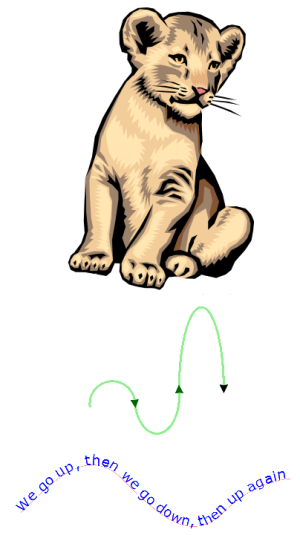

Found 312 pages:
| # | Page | Tags and summary |
|---|---|---|
| 1 | SVG: Scalable Vector Graphics | 2D Graphics, Graphics, Icons, Images, Reference, Responsive Design, SVG, Scalable Graphics, Scalable Images, Vector Graphics, Web, l10n:priority |
| Scalable Vector Graphics (SVG) is an XML-based markup language for describing two dimensional based vector graphics.XML | ||
| 2 | Applying SVG effects to HTML content | CSS, Guide, HTML, SVG |
| Modern browsers support using SVG within CSS styles to apply graphical effects to HTML content. | ||
| 3 | Compatibility sources | SVG |
| The following sources are used for the compatibility tables on SVG elements and attributes: | ||
| 4 | Content type | NeedsTechnicalReview, SVG, Types, data types |
| SVG makes use of a number of data types. This article lists these types along with their syntax and descriptions of what they're used for. | ||
| 5 | Frequently Asked Questions | NeedsUpdate, SVG, SVG FAQ |
| We currently maintain two documents to help answer this question: a status page for SVG in Firefox 1.5+ and a status page for SVG in the development trunk. | ||
| 6 | Linking | SVG |
| The 'target' attribute on the SVG 'a' element doesn't work in Mozilla Firefox 1.5. When SVG documents are embedded within a parent HTML document using the <object> tag: </object> | ||
| 7 | Namespaces Crash Course | SVG, XML |
| As an XML dialect, SVG is namespaced. It is important to understand the concept of namespaces and how they are used if you plan to author SVG content. Versions of SVG viewers prior to the release of Firefox 1.5 unfortunately paid scant attention to namespaces, but they are essential to multi-XML dialect supporting user agents such as Gecko-based browsers which must be very strict. Take some time to understand namespaces now and it will save you all sorts of headaches in the future. | ||
| 8 | Example | SVG, XML |
| In this example, we use XHTML, SVG, JavaScript, and the DOM to animate a swarm of "motes". These motes are governed by two simple principles. First, each mote tries to move towards the mouse cursor, and second each mote tries to move away from the average mote position. Combined, we get this very natural-looking behavior. | ||
| 9 | Other Resources | Reference, SVG |
| Here is a list of additional resources on SVG: | ||
| 10 | Project | SVG |
| This page was auto-generated because a user created a sub-page to this page. | ||
| 11 | Replaced Element | SVG |
| This page was auto-generated because a user created a sub-page to this page. | ||
| 12 | SVG 1.1 Support in Firefox | Firefox, SVG |
| You can find some basic examples of SVG syntax and usage in the W3C SVG test suite. | ||
| 13 | SVG 2 support in Mozilla | Firefox, SVG |
| SVG 2 is the next major version of the SVG standard, which is a complete rework of the SVG 1.2 draft. | ||
| 14 | SVG Attribute reference | Drawing, Landing, NeedsHelp, Responsive Design, SVG, SVG Attribute, SVG Reference, Vector Graphics |
| SVG elements can be modified using attributes that specify details about exactly how the element should be handled or rendered. Below is a list of all of the attributes available in SVG along with links to reference documentation to help you learn which elements support them and how they work. | ||
| 15 | Height | SVG, SVG Attribute |
The height attribute defines the vertical length of an element in the user coordinate system. |
||
| 16 | SVG Conditional Processing Attributes | |
| The SVG conditional processing attributes are all the attributes that can be specified on some SVG elements to control whether or not the element on which it appears should be rendered. | ||
| 17 | SVG Core Attributes | |
| The SVG core attributes are all the common attributes that can be specified on any SVG element. | ||
| 18 | SVG Event Attributes | |
| Event attributes always have their name starting with "on" followed by the name of the event for which they are intended. They specifies some script to run when the event of the given type is dispatched to the element on which the attributes are specified. | ||
| 19 | SVG Presentation Attributes | |
| SVG presentation attributes are CSS properties that can be used as attributes on SVG elements. | ||
| 20 | SVG Styling Attributes | |
| The SVG styling attributes are all the attributes that can be specified on any SVG element to apply CSS styling effects. | ||
| 21 | Width | SVG, SVG Attribute |
The width attribute defines the horizontal length of an element in the user coordinate system. |
||
| 22 | accent-height | NeedsCompatTable, NeedsExample, NeedsUpdate, SVG, SVG Attribute |
| This attribute defines the distance from the origin to the top of accent characters, measured by a distance within the font coordinate system. | ||
| 23 | accumulate | NeedsCompatTable, NeedsExample, SVG, SVG Attribute |
| This attribute controls whether or not the animation is cumulative. | ||
| 24 | additive | NeedsCompatTable, NeedsExample, SVG, SVG Attribute |
| This attribute controls whether or not the animation is additive. | ||
| 25 | alignment-baseline | NeedsExample, SVG, SVG Attribute |
The alignment-baseline attribute specifies how an object is aligned with respect to its parent. This property specifies which baseline of this element is to be aligned with the corresponding baseline of the parent. For example, this allows alphabetic baselines in Roman text to stay aligned across font size changes. It defaults to the baseline with the same name as the computed value of the alignment-baseline property. |
||
| 26 | ascent | NeedsCompatTable, NeedsExample, SVG, SVG Attribute |
| This attribute defines the maximum unaccented depth of the font within the font coordinate system. | ||
| 27 | attributeName | NeedsCompatTable, SVG, SVG Attribute |
| This attribute indicates the name of the attribute in the parent element that is going to be changed during an animation. | ||
| 28 | attributeType | NeedsCompatTable, NeedsExample, SVG, SVG Attribute |
| This attribute specifies the namespace in which the target attribute and its associated values are defined. | ||
| 29 | azimuth | Filters, NeedsCompatTable, NeedsExample, SVG, SVG Attribute |
The azimuth attribute represent the direction angle for the light source on the XY plane (clockwise), in degrees from the x axis. |
||
| 30 | baseFrequency | Filters, NeedsCompatTable, NeedsExample, SVG, SVG Attribute |
The baseFrequency attribute represent The base frequencies parameter for the noise function of the <feTurbulence> primitive. If two <number>s are provided, the first number represents a base frequency in the X direction and the second value represents a base frequency in the Y direction. If one number is provided, then that value is used for both X and Y. |
||
| 31 | baseline-shift | NeedsExample, SVG, SVG Attribute |
The baseline-shift attribute allows repositioning of the dominant-baseline relative to the dominant-baseline of the parent text content element. The shifted object might be a sub- or superscript. |
||
| 32 | begin | NeedsCompatTable, Reference, Référence(2), SVG, SVG Attribute |
| This attribute defines when an animation should begin. | ||
| 33 | bias | Filters, NeedsCompatTable, NeedsExample, SVG, SVG Attribute |
The bias attribute shifts the range of the filter. After applying the kernelMatrix of the <feConvolveMatrix> element to the input image to yield a number and applied the divisor attribute, the bias attribute is added to each component. This allows representation of values that would otherwise be clamped to 0 or 1. |
||
| 34 | calcMode | NeedsCompatTable, NeedsExample, SVG, SVG Attribute |
This attribute specifies the interpolation mode for the animation. The default mode is linear, however if the attribute does not support linear interpolation (e.g. for strings), the calcMode attribute is ignored and discrete interpolation is used. |
||
| 35 | class | NeedsBrowserCompatibility, NeedsExample, NeedsMobileBrowserCompatibility, Reference, SVG, SVG Attribute |
| Assigns a class name or set of class names to an element. You may assign the same class name or names to any number of elements, however, multiple class names must be separated by whitespace characters. | ||
| 36 | clip | SVG, SVG Attribute |
The clip attribute is a presentation attribute defining the visible region of an element. |
||
| 37 | clip-path | SVG, SVG Attribute |
The clip-path presentation attribute defines or associates a clipping path with the element it is related to. |
||
| 38 | clip-rule | NeedsExample, SVG, SVG Attribute |
The clip-rule attribute only applies to graphics elements that are contained within a <clipPath> element. The clip-rule attribute basically works as the fill-rule attribute, except that it applies to <clipPath> definitions. |
||
| 39 | clipPathUnits | SVG, SVG Attribute |
The clipPathUnits attribute indicates which coordinate system to use for the contents of the <clipPath> element. |
||
| 40 | color | NeedsExample, SVG, SVG Attribute |
The color attribute is used to provide a potential indirect value (currentColor) for the fill, stroke, stop-color, flood-color and lighting-color attributes. |
||
| 41 | color-interpolation | NeedsExample, SVG, SVG Attribute |
The color-interpolation attribute specifies the color space for gradient interpolations, color animations, and alpha compositing. |
||
| 42 | color-interpolation-filters | NeedsExample, SVG, SVG Attribute |
The color-interpolation-filters attribute specifies the color space for imaging operations performed via filter effects. |
||
| 43 | color-profile | NeedsExample, SVG, SVG Attribute |
The color-profile attribute is used to define which color profile a raster image included through the <image> element should use. |
||
| 44 | color-rendering | NeedsExample, SVG, SVG Attribute |
The color-rendering attribute provides a hint to the SVG user agent about how to optimize its color interpolation and compositing operations.color-rendering takes precedence over color-interpolation-filters. For example, assume color-rendering: optimizeSpeed and color-interpolation-filters: linearRGB. In this case, the SVG user agent should perform color operations in a way that optimizes performance, which might mean sacrificing the color interpolation precision as specified by color-interpolation-filters: linearRGB. |
||
| 45 | contentScriptType | NeedsCompatTable, SVG, SVG Attribute |
The contentScriptType attribute on the <svg> element specifies the default scripting language for the given document fragment. |
||
| 46 | contentStyleType | NeedsCompatTable, SVG, SVG Attribute |
This attribute specifies the style sheet language for the given document fragment. The contentStyleType is specified on the <svg> element. By default, if it's not defined, the value is text/css |
||
| 47 | cursor | Attribute, Reference, SVG, Web |
The cursor attribute specifies the mouse cursor displayed when the mouse pointer is over an element. |
||
| 48 | cx | SVG, SVG Attribute |
The cx attribute define the x-axis coordinate of a center point. |
||
| 49 | cy | SVG, SVG Attribute |
The cy attribute define the y-axis coordinate of a center point. |
||
| 50 | d | SVG, SVG Attribute |
The d attribute provides a path definition to be drawn. |
||
| 51 | data-* | Attribute, SVG |
The data-* SVG attributes are called custom data attributes. They let SVG markup and its resulting DOM share information that standard attributes can't, usually for scripting purposes. Their custom data are available via the SVGElement interface of the element the attributes belong to, with the SVGElement.dataset property. |
||
| 52 | diffuseConstant | Filters, NeedsCompatTable, NeedsExample, SVG, SVG Attribute |
The diffuseConstant attribute represant the kd value in the Phong lighting model. In SVG, this can be any non-negative number.If the attribute is not specified, then the effect is as if a value of 1 were specified. |
||
| 53 | direction | NeedsExample, SVG, SVG Attribute |
The direction attribute specifies the base writing direction of text and the direction of embeddings and overrides (see unicode-bidi) for the Unicode bidirectional algorithm. For the direction attribute to have any effect on an element that does not by itself establish a new text chunk (such as a <tspan> element without absolute position adjustments due to x or y attributes), the unicode-bidi property's value must be embed or bidi-override. |
||
| 54 | display | NeedsExample, Reference, Référence(2), SVG, SVG Attribute |
The display attribute lets you control the rendering of graphical or container elements. |
||
| 55 | divisor | Filters, NeedsCompatTable, NeedsExample, SVG, SVG Attribute |
After applying the kernelMatrix of the <feConvolveMatrix> element to the input image to yield a number, that number is divided by the value given to the divisor attribute to yield the final destination color value. A divisor that is the sum of all the matrix values tends to have an evening effect on the overall color intensity of the result. |
||
| 56 | dominant-baseline | NeedsExample, Reference, Référence(2), SVG, SVG Attribute |
The dominant-baseline attribute is used to determine or re-determine a scaled-baseline-table. A scaled-baseline-table is a compound value with three components: a baseline-identifier for the dominant-baseline, a baseline-table and a baseline-table font-size. Some values of the property re-determine all three values; other only re-establish the baseline-table font-size. When the initial value, auto, would give an undesired result, this property can be used to explicitly set the desire scaled-baseline-table. |
||
| 57 | dur | NeedsCompatTable, NeedsExample, SVG, SVG Attribute |
| This attribute indicates the simple duration of the animation. | ||
| 58 | dx | SVG, SVG Attribute |
The dx attribute indicates a shift along the x-axis on the position of an element or its content. |
||
| 59 | dy | SVG, SVG Attribute |
The dy attribute indicates a shift along the y-axis on the position of an element or its content. |
||
| 60 | edgeMode | Filters, NeedsCompatTable, NeedsExample, SVG, SVG Attribute |
The edgeMode attribute determines how to extend the input image as necessary with color values so that the matrix operations can be applied when the kernel is positioned at or near the edge of the input image. |
||
| 61 | elevation | Filters, NeedsCompatTable, NeedsExample, SVG, SVG Attribute |
The elevation attribute represent the direction angle for the light source from the XY plane towards the z axis, in degrees. Note the positive Z-axis points towards the viewer of the content. |
||
| 62 | end | NeedsCompatTable, NeedsExample, SVG, SVG Attribute |
| This attribute defines an end value for the animation that can constrain the active duration. | ||
| 63 | externalResourcesRequired | NeedsCompatTable, NeedsExample, SVG, SVG Attribute |
| Documents often reference and use the contents of other files (and other Web resources) as part of their rendering. In some cases, authors want to specify that particular resources are required for a document to be considered correct. | ||
| 64 | fill | SVG, SVG Attribute |
The fill attribute has two different meaning: For shapes and text it's a presentation attribute that lets define the color (or any SVG paint servers like gradients or patterns) used to paint the element; for animation it lets define what is the final state of the animation. |
||
| 65 | fill-opacity | SVG, SVG Attribute |
The fill-opacity attribute is a presentation attribute defining the opacity of the paint server (color, gradient, pattern, etc) applied to a shape. |
||
| 66 | fill-rule | SVG, SVG Attribute |
The fill-rule attribute is a presentation attribute defining the algorithm to use to determine the inside part of a shape. |
||
| 67 | filter | NeedsExample, SVG, SVG Attribute, SVG Filter |
The filter attribute defines the filter effects defined by the <filter> element that shall be applied to its element. |
||
| 68 | filterRes | NeedsCompatTable, NeedsExample, SVG, SVG Attribute, SVG Filter |
A <filter> element can define a region to which a given filter effect applies and can provide a resolution for any intermediate continuous tone images used to process any raster-based filter primitives. |
||
| 69 | filterUnits | NeedsCompatTable, NeedsExample, SVG, SVG Attribute, SVG Filter |
The filterUnits attribute defines the coordinate system for attributes x, y, width and height. |
||
| 70 | flood-color | NeedsExample, SVG, SVG Attribute, SVG Filter |
The flood-color attribute indicates what color to use to flood the current filter primitive subregion defined through the <feFlood> element. The keyword currentColor and ICC colors can be specified in the same manner as within a <paint> specification for the fill and stroke attributes. |
||
| 71 | flood-opacity | NeedsExample, SVG, SVG Attribute, SVG Filter |
The flood-opacity attribute indicates the opacity value to use across the current filter primitive subregion defined through the <feFlood> element. |
||
| 72 | font-family | NeedsExample, SVG, SVG Attribute |
The font-family attribute indicates which font family will be used to render the text, specified as a prioritized list of font family names and/or generic family names. |
||
| 73 | font-size | SVG, SVG Attribute |
The font-size attribute refers to the size of the font from baseline to baseline when multiple lines of text are set solid in a multiline layout environment. For SVG, if a <length> is provided without a unit identifier (e.g., an unqualified number such as 128), the browser processes the <length> as a height value in the current user coordinate system. |
||
| 74 | font-size-adjust | NeedsExample, SVG, SVG Attribute |
The font-size-adjust attribute allows authors to specify an aspect value for an element that will preserve the x-height of the first choice font in a substitute font. |
||
| 75 | font-stretch | NeedsExample, SVG, SVG Attribute |
The font-stretch attribute indicates the desired amount of condensing or expansion in the glyphs used to render the text. |
||
| 76 | font-style | NeedsExample, SVG, SVG Attribute |
The font-style attribute specifies whether the text is to be rendered using a normal, italic or oblique face. |
||
| 77 | font-variant | NeedsExample, SVG, SVG Attribute |
The font-variant attribute indicates whether the text is to be rendered using the normal glyphs for lowercase characters or using small-caps glyphs for lowercase characters. |
||
| 78 | font-weight | NeedsExample, SVG, SVG Attribute |
The font-weight attribute refers to the boldness or lightness of the glyphs used to render the text, relative to other fonts in the same font family. |
||
| 79 | fr | Attribute, Fr, Reference, SVG, SVG Attribute, radialGradient |
For the <radialGradient> element, this attribute define the radius of the focal point for the radial gradient. If the attribute is not specified, the default value of 0% is used. |
||
| 80 | from | NeedsCompatTable, SVG, SVG Attribute |
This attribute indicates the initial value of the attribute that will be modified during the animation. When used with the to attribute, the animation will change the modified attribute from the from value to the to value. |
||
| 81 | fx | Attribute, Reference, Référence(2), SVG, SVG Attribute |
For the <radialGradient> element, this attribute define the x-axis coordinate of the focal point for radial gradient. If the attribute is not specified, it's assumed to be at the same place as the center point. |
||
| 82 | fy | Attribute, Reference, Référence(2), SVG, SVG Attribute |
For the <radialGradient> element, this attribute defines the y-axis coordinate of the focal point for the radial gradient. If the attribute is not specified, it's assumed to be at the same place as the center point. |
||
| 83 | gradientTransform | NeedsCompatTable, NeedsExample, SVG, SVG Attribute |
The gradientTransform attribute contains the definition of an optional additional transformation from the gradient coordinate system onto the target coordinate system (i.e., userSpaceOnUse or objectBoundingBox). This allows for things such as skewing the gradient. This additional transformation matrix is post-multiplied to (i.e., inserted to the right of) any previously defined transformations, including the implicit transformation necessary to convert from object bounding box units to user space. |
||
| 84 | gradientUnits | NeedsCompatTable, NeedsExample, SVG, SVG Attribute |
The gradientUnits attribute defines the coordinate system for attributes x1, y1, x2 and y2 on the <linearGradient> element or for attributes cx, cy, r, fx, and fy on the <radialGradient>. |
||
| 85 | href | Reference, SVG, SVG Attribute |
The href attribute defines a link to a resource as a reference URL. The exact meaning of that link depends on the context of each element using it. |
||
| 86 | image-rendering | NeedsExample, SVG, SVG Attribute |
The image-rendering attribute provides a hint to the browser about how to make speed vs. quality tradeoffs as it performs image processing.As a presentation attribute, it also can be used as a property directly inside a CSS stylesheet, see css image-rendering for further information |
||
| 87 | in | Experimental, Filters, NeedsCompatTable, NeedsExample, SVG, SVG Attribute |
The in attribute identifies input for the given filter primitive. |
||
| 88 | in2 | Filters, NeedsCompatTable, NeedsExample, SVG, SVG Attribute |
The in2 attribute identifies the second input for the given filter primitive. It works exactly like the in attribute. |
||
| 89 | k1 | Filters, NeedsCompatTable, NeedsExample, SVG, SVG Attribute |
The k1 attribute defines one of the value to be used within the the arithmetic operation of the <feComposite> filter primitive. If this attribute is not set, its default value is 0. |
||
| 90 | k2 | Filters, NeedsCompatTable, NeedsExample, SVG, SVG Attribute |
The k2 attribute defines one of the value to be used within the the arithmetic operation of the <feComposite> filter primitive. If this attribute is not set, its default value is 0. |
||
| 91 | k3 | Filters, NeedsCompatTable, NeedsExample, SVG, SVG Attribute |
The k3 attribute defines one of the value to be used within the the arithmetic operation of the <feComposite> filter primitive. If this attribute is not set, its default value is 0. |
||
| 92 | k4 | Filters, NeedsCompatTable, NeedsExample, SVG, SVG Attribute |
The k4 attribute defines one of the value to be used within the the arithmetic operation of the <feComposite> filter primitive. If this attribute is not set, its default value is 0. |
||
| 93 | kernelMatrix | Filters, NeedsCompatTable, NeedsExample, SVG, SVG Attribute |
the kernelMatrix attribute defines the list of <number>s that make up the kernel matrix for the <feConvolveMatrix> element. Values are separated by space characters and/or a comma. The number of entries in the list must equal to <orderX> by <orderY> as defined in the order attribute. |
||
| 94 | kernelUnitLength | Filters, NeedsCompatTable, NeedsExample, SVG, SVG Attribute |
The kernelUnitLength attribute has two meaning based on the context it's used. |
||
| 95 | kerning | NeedsExample, SVG, SVG Attribute |
The kerning attribute indicates whether the browser should adjust inter-glyph spacing based on kerning tables that are included in the relevant font (i.e., enable auto-kerning) or instead disable auto-kerning and instead set inter-character spacing to a specific length (typically, zero). |
||
| 96 | keySplines | NeedsCompatTable, NeedsExample, SVG, SVG Attribute |
The keySplines attribute defines a set of Bézier control points associated with the keyTimes list, defining a cubic Bézier function that controls interval pacing. The attribute value is a semicolon-separated list of control point descriptions. Each control point description is a set of four values: x1 y1 x2 y2, describing the Bézier control points for one time segment. The keyTimes values that define the associated segment are the Bézier "anchor points", and the keySplines values are the control points. Thus, there must be one fewer sets of control points than there are keyTimes.The values of x1 y1 x2 y2 must all be in the range 0 to 1.This attribute is ignored unless the calcMode is set to spline.If there are any errors in the keySplines specification (bad values, too many or too few values), the animation will not occur. |
||
| 97 | keyTimes | NeedsBrowserCompatibility, NeedsCompatTable, SVG, SVG Attribute |
The keyTimes attribute is a semicolon-separated list of time values used to control the pacing of the animation. Each time in the list corresponds to a value in the values attribute list, and defines when the value is used in the animation. Each time value in the keyTimes list is specified as a floating point value between 0 and 1 (inclusive), representing a proportional offset into the duration of the animation element. |
||
| 98 | lengthAdjust | NeedsCompatTable, NeedsContent, SVG |
When an SVG <text> or <tspan> element has a specific length, set using the textLength attribute, the lengthAdjust attribute controls how the text is stretched or compressed into that length. |
||
| 99 | letter-spacing | NeedsExample, SVG, SVG Attribute |
The letter-spacing attribute controls spacing between text characters, in addition to any spacing from the kerning attribute. |
||
| 100 | lighting-color | NeedsExample, SVG, SVG Attribute, SVG Filter |
The lighting-color attribute defines the color of the light source for filter primitives elements <feDiffuseLighting> and <feSpecularLighting>. |
||
| 101 | limitingConeAngle | Filters, NeedsCompatTable, NeedsExample, SVG, SVG Attribute |
The limitingConeAngle attribute represents the angle in degrees between the spot light axis (i.e. the axis between the light source and the point to which it is pointing at) and the spot light cone. So it defines a limiting cone which restricts the region where the light is projected. No light is projected outside the cone. |
||
| 102 | local | Attribute, Reference, SVG, Web |
SVG color is an addition to a base profile of the SVG language. A user agent therefore conforms to at least one base profile. |
||
| 103 | marker-end | NeedsExample, SVG, SVG Attribute |
The marker-end defines the arrowhead or polymarker that will be drawn at the final vertex of the given <path> element or basic shape. Note that for a <path> element which ends with a closed sub-path, the last vertex is the same as the initial vertex on the given sub-path. In this case, if marker-end does not equal none, then it is possible that two markers will be rendered on the given vertex. One way to prevent this is to set marker-end to none. (Note that the same comment applies to <polygon> elements.) |
||
| 104 | marker-mid | NeedsExample, SVG, SVG Attribute |
The marker-mid defines the arrowhead or polymarker that shall be drawn at every vertex other than the first and last vertex of the given <path> element or basic shape. |
||
| 105 | marker-start | NeedsExample, SVG, SVG Attribute |
The marker-start attribute defines the arrowhead or polymarker that will be drawn at the first vertex of the given <path> element or basic shape. |
||
| 106 | markerHeight | NeedsCompatTable, NeedsExample, SVG, SVG Attribute |
The markerHeight represents the height of the viewport into which the <marker> is to be fitted when it is rendered. |
||
| 107 | markerUnits | NeedsCompatTable, NeedsExample, SVG, SVG Attribute |
The markerUnits attribute defines the coordinate system for the attributes markerWidth, markerHeight and the contents of the <marker>. |
||
| 108 | markerWidth | NeedsCompatTable, NeedsExample, SVG, SVG Attribute |
The markerWidth represents the width of the viewport into which the <marker> is to be fitted when it is rendered. |
||
| 109 | mask | SVG, SVG Attribute |
The mask attribute is a presentation attribute mainly used to bind a given <mask> element with the element the attribute belong to. |
||
| 110 | maskContentUnits | SVG, SVG Attribute |
The maskContentUnits attribute indicates which coordinate system to use for the contents of the <mask> element. |
||
| 111 | maskUnits | SVG, SVG Attribute |
The maskUnits attribute indicates which coordinate system to use for the geometry properties of the <mask> element. |
||
| 112 | max | NeedsCompatTable, NeedsExample, SVG, SVG Attribute |
| This attribute specifies the maximum value of the active duration. | ||
| 113 | min | NeedsCompatTable, NeedsExample, SVG, SVG Attribute |
| This attribute specifies the minimum value of the active duration. | ||
| 114 | mode | Filters, NeedsCompatTable, NeedsExample, SVG, SVG Attribute |
The mode attribute defines the blending mode on the <feBlend> filter primitive. |
||
| 115 | numOctaves | Filters, NeedsCompatTable, NeedsExample, SVG, SVG Attribute |
The numOctaves parameter for the noise function of the <feTurbulence> primitive. |
||
| 116 | opacity | NeedsExample, SVG, SVG Attribute |
The opacity attribute specifies the transparency of an object or of a group of objects, that is, the degree to which the background behind the element is overlaid. |
||
| 117 | operator | Filters, NeedsCompatTable, NeedsExample, SVG, SVG Attribute |
The operator attribute as two meaning based on the context it's used. |
||
| 118 | order | Filters, NeedsCompatTable, NeedsExample, SVG, SVG Attribute |
the order attribute indicates the size of the matrix to be used by a <feConvolveMatrix> element. |
||
| 119 | overflow | NeedsExample, SVG, SVG Attribute |
The overflow attribute has the same parameter values as defined for the css overflow property. However, the following additional points apply: |
||
| 120 | overline-position | Attribute, Reference, Référence(2), SVG, font |
The overline-position attribute represents the ideal vertical position of the overline. The overline position is expressed in the font's coordinate system. |
||
| 121 | overline-thickness | Attribute, Reference, Référence(2), SVG, font |
The overline-thickness attribute represents the ideal thickness of the overline. The overline thickness is expressed in the font's coordinate system. |
||
| 122 | paint-order | Reference, Référence(2), SVG, paint-order |
The paint-order attribute specifies the order that the fill, stroke, and markers of a given shape or text element are painted. Its default value is normal, which indicates that the fill will be painted first, then the stroke, and finally the markers. To specify a different order, a white space separated list of keywords fill, stroke, and markers can be used. If any of the three painting components is omitted, then they will be painted in their default order after the specified components. For example, using stroke is equivalent to stroke fill markers. |
||
| 123 | pathLength | SVG, SVG Attribute |
The pathLength attribute lets authors specify a total length for the path, in user units. This value is then used to calibrate the browser's distance calculations with those of the author, by scaling all distance computations using the ratio pathLength/(computed value of path length). |
||
| 124 | patternContentUnits | SVG, SVG Attribute |
The patternContentUnits attribute indicates which coordinate system to use for the contents of the <pattern> element. |
||
| 125 | patternTransform | SVG, SVG Attribute |
The patternTransform attribute defines a list of transform definitions that are applied to a pattern tile. |
||
| 126 | patternUnits | SVG, SVG Attribute |
The patternUnits attribute indicates which coordinate system to use for the geometry properties of the <pattern> element. |
||
| 127 | pointer-events | SVG, SVG Attribute |
The pointer-events attribute is a presentation attribute that lets define whether or when an element may be the target of a mouse event. |
||
| 128 | points | SVG, SVG Attribute |
The points attribute defines a list of points. Each point is defined by a pair of number representing a X and a Y coordinate in the user coordinate system. If the attribute contain an odd number of coordinate, the last one will be ignored. |
||
| 129 | pointsAtX | Filters, NeedsCompatTable, NeedsExample, SVG, SVG Attribute |
The pointsAtX attribute represent the X location in the coordinate system established by attribute primitiveUnits on the <filter> element of the point at which the light source is pointing. |
||
| 130 | pointsAtY | Filters, NeedsCompatTable, NeedsExample, SVG, SVG Attribute |
The pointsAtY attribute represent the Y location in the coordinate system established by attribute primitiveUnits on the <filter> element of the point at which the light source is pointing. |
||
| 131 | pointsAtZ | Filters, NeedsCompatTable, NeedsExample, SVG, SVG Attribute |
The pointsAtZ attribute represent the X location in the coordinate system established by attribute primitiveUnits on the <filter> element of the point at which the light source is pointing, assuming that, in the initial coordinate system, the positive Z-axis comes out towards the person viewing the content and assuming that one unit along the Z-axis equals one unit in X and Y. |
||
| 132 | preserveAlpha | Filters, NeedsCompatTable, NeedsExample, SVG, SVG Attribute |
the preserveAlpha attribute indicates how a <feConvolveMatrix> element handled alpha transparency.A value of false indicates that the convolution matrix will apply to all channels, including the alpha channel. This is the default value. |
||
| 133 | preserveAspectRatio | SVG, SVG Attribute |
The preserveAspectRatio attribute indicates how an element with a viewBox providing a given aspect ratio must fit into a viewport with a different aspect ratio. |
||
| 134 | primitiveUnits | NeedsCompatTable, NeedsExample, SVG, SVG Attribute, SVG Filter |
The primitiveUnits attribute specifies the coordinate system for the various length values within the filter primitives and for the attributes that define the filter primitive subregion. |
||
| 135 | r | SVG, SVG Attribute |
The r attribute defines the radius of a circle. |
||
| 136 | radius | Filters, NeedsCompatTable, NeedsExample, SVG, SVG Attribute |
The radius attribute represent the radius for the operation on a given <feMorphology> filter primitive. If two <number>s are provided, the first number represents a x-radius and the second value represents a y-radius. If one number is provided, then that value is used for both X and Y. The values are in the coordinate system established by the primitiveUnits attribute on the <filter> element. |
||
| 137 | refX | NeedsContent, NeedsExample |
| The refX attribute is used alongside the refY attribute to provides coordinates for the location on the marker where it will be joined to its markable element. Coordinates are relative to the marker's coordinate system, and not the markable element it is placed on. | ||
| 138 | repeatCount | NeedsCompatTable, NeedsExample, SVG, SVG Attribute |
| This attribute indicates the number of time the animation will take place. | ||
| 139 | repeatDur | NeedsCompatTable, NeedsExample, SVG, SVG Attribute |
| This attribute specifies the total duration for repeat. | ||
| 140 | requiredFeatures | NeedsCompatTable, SVG, SVG Attribute |
This attribute takes a list of feature strings, with the individual strings separated by white space. It determines whether or not all of the named features are supported by the browser; if all of them are supported, the attribute evaluates to true end the element is rendered; otherwise, the attribute evaluates to false and the current element and its children are skipped and thus will not be rendered. This provides a way to design SVG that gracefully falls back when features aren't available. |
||
| 141 | restart | NeedsCompatTable, NeedsExample, SVG, SVG Attribute |
| This attribute indicates when animation can or can not restart. | ||
| 142 | result | NeedsCompatTable, NeedsExample, SVG, SVG Attribute |
The result attribute defines the assigned name for this filter primitive. If supplied, then graphics that result from processing this filter primitive can be referenced by an in attribute on a subsequent filter primitive within the same <filter> element. If no value is provided, the output will only be available for re-use as the implicit input into the next filter primitive if that filter primitive provides no value for its in attribute. |
||
| 143 | rx | SVG, SVG Attribute |
The rx attribute defines a radius on the x-axis. |
||
| 144 | ry | SVG, SVG Attribute |
The ry attribute defines a radius on the y-axis. |
||
| 145 | scale | Filters, NeedsCompatTable, NeedsExample, SVG, SVG Attribute |
The scale attribute define the displacement scale factor to be used on a <feDisplacementMap> filter primitive. The amount is expressed in the coordinate system established by the primitiveUnits attribute on the <filter> element. |
||
| 146 | seed | Filters, NeedsCompatTable, NeedsExample, SVG, SVG Attribute |
The seed attribute represents the starting number for the pseudo random number generator of the <feTurbulence> primitive. |
||
| 147 | shape-rendering | NeedsExample, SVG, SVG Attribute |
The creator of SVG content might want to provide a hint about what tradeoffs to make as the browser renders <path> element or basic shapes. The shape-rendering attribute provides these hints. |
||
| 148 | specularConstant | Filters, NeedsCompatTable, NeedsExample, Reference, Référence(2), SVG, SVG Attribute |
The specularConstant attribute represents the ks value in the Phong lighting model. In SVG, this can be any non-negative number. |
||
| 149 | specularExponent | Filters, NeedsCompatTable, NeedsExample, SVG, SVG Attribute |
The specularExponent attribute controls the focus for the light source, a larger value indicate a more "shiny" light. |
||
| 150 | stdDeviation | Filters, NeedsCompatTable, NeedsExample, SVG, SVG Attribute |
The stdDeviation attribute defines the standard deviation for the blur operation. If two <number>s are provided, the first number represents a standard deviation value along the x-axis. The second value represents a standard deviation along the y-axis. If one number is provided, then that value is used for both X and Y. |
||
| 151 | stitchTiles | Filters, NeedsCompatTable, NeedsExample, Reference, Référence(2), SVG, SVG Attribute |
The stitchTiles attribute defines how the Perlin tiles behave at the border. |
||
| 152 | stop-color | NeedsExample, SVG, SVG Attribute |
The stop-color attribute indicates what color to use at that gradient stop. The keyword currentColor and ICC colors can be specified in the same manner as within a <paint> specification for the fill and stroke attributes. |
||
| 153 | stop-opacity | NeedsExample, SVG, SVG Attribute |
The stop-opacity attribute defines the opacity of a given gradient stop. |
||
| 154 | strikethrough-position | Attribute, Reference, Référence(2), SVG, font |
The strikethrough-position attribute represents the ideal vertical position of the strikethrough. The strikethrough position is expressed in the font's coordinate system. |
||
| 155 | strikethrough-thickness | Attribute, Reference, Référence(2), SVG, font |
The strikethrough-thickness attribute represents the ideal thickness of the strikethrough. The strikethrough thickness is expressed in the font's coordinate system. |
||
| 156 | stroke | SVG, SVG Attribute |
The stroke attribute is a presentation attribute defining the color (or any SVG paint servers like gradients or patterns) used to paint the outline of the shape; |
||
| 157 | stroke-dasharray | SVG, SVG Attribute |
The stroke-dasharray attribute is a presentation attribute defining the pattern of dashes and gaps used to paint the outline of the shape; |
||
| 158 | stroke-dashoffset | SVG, SVG Attribute |
The stroke-dashoffset attribute is a presentation attribute defining an offset on the rendering of the associated dash array. |
||
| 159 | stroke-linecap | SVG, SVG Attribute |
The stroke-linecap attribute is a presentation attribute defining the shape to be used at the end of open subpaths when they are stroked. |
||
| 160 | stroke-linejoin | SVG, SVG Attribute |
The stroke-linejoin attribute is a presentation attribute defining the shape to be used at the corners of paths when they are stroked. |
||
| 161 | stroke-miterlimit | SVG, SVG Attribute |
The stroke-miterlimit attribute is a presentation attribute defining a limit on the ratio of the miter length to the stroke-width used to draw a miter join. When the limit is exceeded, the join is converted from a miter to a bevel. |
||
| 162 | stroke-opacity | SVG, SVG Attribute |
The stroke-opacity attribute is a presentation attribute defining the opacity of the paint server (color, gradient, pattern, etc) applied to the stroke of a shape. |
||
| 163 | stroke-width | SVG, SVG Attribute |
The stroke-width attribute is a presentation attribute defining the width of the stroke to be applied to the shape. |
||
| 164 | style | NeedsCompatTable, NeedsExample, Reference, SVG, SVG Attribute, Web |
The style attribute specifies style information for its element. It functions identically to the style attribute in HTML. |
||
| 165 | surfaceScale | Filters, NeedsCompatTable, NeedsExample, SVG, SVG Attribute |
The surfaceScale attribute represent the height of the surface for a light filter primitive. If the attribute is not specified, then the effect is as if a value of 1 were specified. |
||
| 166 | tabindex | NeedsBrowserCompatibility, NeedsMobileBrowserCompatibility, Reference, SVG, SVG Attribute |
The tabindex SVG attribute allows you to control whether an element is focusable and to define the relative order of the element for the purposes of sequential focus navigation. |
||
| 167 | targetX | Filters, NeedsCompatTable, NeedsExample, SVG, SVG Attribute |
The targetX attribute determines the positioning in X of the convolution matrix relative to a given target pixel in the input image. The leftmost column of the matrix is column number zero. The value must be such that: 0 <= targetX < orderX. By default, the convolution matrix is centered in X over each pixel of the input image (i.e., targetX = floor ( orderX / 2 )). |
||
| 168 | targetY | Filters, NeedsCompatTable, NeedsExample, SVG, SVG Attribute |
The targetY attribute determines the positioning in Y of the convolution matrix relative to a given target pixel in the input image. The topmost row of the matrix is row number zero. The value must be such that: 0 <= targetY < orderY. By default, the convolution matrix is centered in Y over each pixel of the input image (i.e., targetY = floor ( orderY / 2 )). |
||
| 169 | text-anchor | SVG, SVG Attribute |
The text-anchor attribute is used to align (start-, middle- or end-alignment) a string of text relative to a given point. |
||
| 170 | text-decoration | SVG, SVG Attribute |
The text-decoration attribute works exactly like the css text decoration property except that it's an attribute. See css text decoration for further information. |
||
| 171 | text-rendering | NeedsExample, SVG, SVG Attribute |
The creator of SVG content might want to provide a hint about what tradeoffs to make as the browser renders text. The text-rendering attribute provides these hints. |
||
| 172 | textLength | Attribute, Reference, SVG, Text, Web, textLength |
The textLength attribute, available on SVG <text> and <tspan> elements, lets you specify the width of the space into which the text will draw. The user agent will ensure that the text does not extend farther than that distance, using the method or methods specified by the lengthAdjust attribute. By default, only the spacing between characters is adjusted, but the glyph size can also be adjusted if you change lengthAdjust. |
||
| 173 | to | NeedsCompatTable, SVG, SVG Attribute |
| This attribute indicates the final value of the attribute that will be modified during the animation. The value of the attribute will change between the from attribute value and this value. By default the change will be linear. | ||
| 174 | transform | SVG, SVG Attribute |
The transform attribute defines a list of transform definitions that are applied to an element and the element's children. |
||
| 175 | type | Filters, NeedsCompatTable, NeedsExample, SVG, SVG Attribute |
The type attribute is a generic attribute and it has different meaning based on the context in which it's used. |
||
| 176 | underline-position | Attribute, Reference, Référence(2), SVG, font |
The underline-position attribute represents the ideal vertical position of the underline. The underline position is expressed in the font's coordinate system. |
||
| 177 | underline-thickness | Attribute, Reference, Référence(2), SVG, font |
The underline-thickness attribute represents the ideal thickness of the underline. The underline thickness is expressed in the font's coordinate system. |
||
| 178 | values | NeedsCompatTable, NeedsExample, SVG, SVG Attribute |
The values attribute has two meanings, depending upon the context where it's used. |
||
| 179 | vector-effect | |
The vector-effect property specifies the vector effect to use when drawing an object. Vector effects are applied before any of the other compositing operations: filters, masks and clips. |
||
| 180 | version | Attribute, Reference, SVG, Web |
The version attribute is used to indicate what specification a SVG document conforms to. It is only allowed on the root <svg> element. It is purely advisory and has no influence on rendering or processing. |
||
| 181 | viewBox | SVG, SVG Attribute |
The viewBox attribute defines the position and dimension, in user space, of an SVG viewport. |
||
| 182 | visibility | NeedsExample, SVG, SVG Attribute |
The visibility attribute lets you control the visibility of graphical elements. With a value of hidden or collapse the current graphics element is invisible. |
||
| 183 | word-spacing | NeedsExample, SVG, SVG Attribute |
The word-spacing attribute specifies spacing behavior between words. |
||
| 184 | writing-mode | NeedsExample, SVG, SVG Attribute |
The writing-mode attribute specifies whether the initial inline-progression-direction for a <text> element shall be left-to-right, right-to-left, or top-to-bottom. The writing-mode attribute applies only to <text> elements; the attribute is ignored for <tspan>, <tref>, <altGlyph> and <textPath> sub-elements. (Note that the inline-progression-direction can change within a <text> element due to the Unicode bidirectional algorithm and properties direction and unicode-bidi. |
||
| 185 | x | SVG, SVG Attribute |
The x attribute defines a x-axis coordinate in the user coordinate system. |
||
| 186 | x1 | Drawing Lines, Gradients, LInes, SVG, SVG Attribute, SVG Gradients, Vector Graphics |
The x1 attribute is used to specify the first x-coordinate for drawing an SVG element that requires more than one coordinate. Elements that only need one coordinate use the x attribute instead. |
||
| 187 | x2 | SVG, SVG Attribute |
The x2 attribute is used to specify the second x-coordinate for drawing an SVG element that requires more than one coordinate. Elements that only need one coordinate use the x attribute instead. |
||
| 188 | xChannelSelector | Filters, NeedsCompatTable, NeedsExample, SVG, SVG Attribute |
For a <feDisplacementMap> filter primitive, The xChannelSelector attribute indicates which channel from in2 to use to displace the pixels in in along the x-axis. If attribute xChannelSelector is not specified, then the effect is as if a value of A were specified. |
||
| 189 | xlink:href | NeedsCompatTable, SVG, SVG Attribute |
The xlink:href attribute defines a link to a resource as a reference <IRI>. The exact meaning of that link depends on the context of each element using it. See above for more specific usage. |
||
| 190 | xlink:show | NeedsCompatTable, SVG, SVG Attribute |
| SVG Attribute reference home | ||
| 191 | xlink:title | NeedsCompatTable, SVG, SVG Attribute |
The xlink:title attribute is used to describe the meaning of a link or resource in a human-readable fashion, along the same lines as the xlink:role or xlink:arcrole attribute. A value is optional; if a value is supplied, it shall contain a string that describes the resource. In general it is preferable to use a <title> child element rather than a xlink:title attribute. |
||
| 192 | xml:lang | Attribute, Reference, SVG |
xml:lang is a universal attribute allowed in all XML dialects to mark up the natural human language that an element contains. It's almost identical in usage to HTML's lang, but in conforming XML 1.0 documents, it does not allow the use of a null attribute value (xml:lang="") to indicate an unknown language. Instead, use xml:lang="und". |
||
| 193 | xml:space | NeedsCompatTable, NeedsExample, SVG, SVG Attribute |
SVG supports the standard XML attribute xml:space to specify the handling of white space characters within a given <text> element's character data. Note that any child element of a <text> element may also have an xml:space attribute which will apply to that child element's text content. Note that this attribute influences the way a browser should parse the xml content and therefore will change the way the DOM is built. It means that any change made to the value of this attribute through the DOM API may have no effect. |
||
| 194 | y | SVG, SVG Attribute |
The y attribute defines a y-axis coordinate in the user coordinate system. |
||
| 195 | y1 | SVG, SVG Attribute |
The y1 attribute is used to specify the first y-coordinate for drawing an SVG element that requires more than one coordinate. Elements that only need one coordinate use the y attribute instead. |
||
| 196 | y2 | SVG, SVG Attribute |
The y2 attribute is used to specify the second y-coordinate for drawing an SVG element that requires more than one coordinate. Elements that only need one coordinate use the y attribute instead. |
||
| 197 | yChannelSelector | Filters, NeedsCompatTable, NeedsExample, SVG, SVG Attribute |
For a <feDisplacementMap> filter primitive, the yChannelSelector attribute indicates which channel from in2 to use to displace the pixels in in along the y-axis. If attribute yChannelSelector is not specified, then the effect is as if a value of A were specified. |
||
| 198 | z | Filters, NeedsCompatTable, NeedsExample, SVG, SVG Attribute |
The z attribute defines the location along the Z-axis for a light source in the coordinate system established by the primitiveUnits attribute on the <filter> element, assuming that, in the initial coordinate system, the positive Z-axis comes out towards the person viewing the content and assuming that one unit along the Z-axis equals one unit in X and Z. |
||
| 199 | SVG Tutorial | Intermediate, NeedsContent, NeedsHelp, NeedsUpdate, SVG, SVG:Tutorial |
| Scalable Vector Graphics, SVG, is a W3C XML dialect to mark up graphics. It is partially implemented in Firefox, Opera, WebKit browsers, Internet Explorer and other browsers. | ||
| 200 | Basic Transformations | Intermediate, SVG, SVG:Tutorial |
Now we're ready to start distorting our beautiful images. But first, let's formally introduce the <g> element. With this helper, you can assign properties to a complete set of elements. Actually, that's its only purpose. An example: |
||
| 201 | Basic shapes | Beginner, NeedsBeginnerUpdate, NeedsMarkupWork, SVG, SVG:Tutorial |
| There are several basic shapes used for most SVG drawing. The purpose of these shapes is fairly obvious from their names. Some of the attributes that determine their position and size are given, but an element reference would probably contain more accurate and complete descriptions along with other properties that won't be covered in here. However, since they're used in most SVG documents, it's necessary to give them some sort of introduction. | ||
| 202 | Clipping and masking | Advanced, SVG, SVG:Tutorial |
| Erasing part of what one has created might at first sight look contradictory. But when you try to create a semicircle in SVG, you will find out the use of the following properties quickly. | ||
| 203 | Fills and Strokes | Beginner, NeedLiveSamples, SVG, SVG:Tutorial |
| There are several ways to color shapes (including specifying attributes on the object) using inline CSS, an embedded CSS section, or an external CSS file. Most SVG you'll find around the web use inline CSS, but there are advantages and disadvantages associated with each type. | ||
| 204 | Filter effects | Advanced, NeedsContent, SVG, SVG:Tutorial |
| There are situations, where basic shapes do not provide the flexibility you need to achieve a certain effect. Drop shadows, to provide a popular example, cannot be created reasonably with a combination of gradients. Filters are SVG's mechanism to create sophisticated effects. | ||
| 205 | Getting Started | Beginner, NeedsBeginnerUpdate, SVG, SVG:Tutorial |
| Let us dive straight in with a simple example. Take a look at the following code. | ||
| 206 | Gradients in SVG | Intermediate, SVG, SVG:Tutorial |
| Perhaps more exciting than just fills and strokes is the fact that you can also create and apply gradients as either fills or strokes. | ||
| 207 | Introduction | Beginner, Guide, NeedsBeginnerUpdate, NeedsUpdate, SVG, SVG:Tutorial, Tutorial |
| SVG is an XML language, similar to XHTML, which can be used to draw vector graphics, such as the ones shown to the right. It can be used to create an image either by specifying all the lines and shapes necessary, by modifying already existing raster images, or by a combination of both. The image and its components can also be transformed, composited together, or filtered to change their appearance completely. | ||
| 208 | Other content in SVG | Intermediate, SVG, SVG:Tutorial |
| Apart from graphic primitives like rectangles and circles, SVG offers a set of elements to embed other types of content in images as well. | ||
| 209 | Paths | Intermediate, NeedsContent, NeedsHelp, SVG, SVG:Tutorial |
The <path> element is the most powerful element in the SVG library of basic shapes. You can use it to create lines, curves, arcs and more. |
||
| 210 | Patterns | Advanced, SVG, SVG:Tutorial |
Patterns are arguably one of the more confusing fill types to use in SVG. They're also very powerful, so they're worth talking about and getting at least a fundamental grasp on. Like gradients, the <pattern> element should be put in the <defs> section of your SVG file. |
||
| 211 | Positions | Beginner, Coordinate systems, Coordinates, Drawing, Graphics, NeedsBeginnerUpdate, SVG, SVG:Tutorial |
| In this article, we examine how Scalable Vector Graphics (SVG) represents the positions and sizes of objects within a drawing context, including coordinate system and what a "pixel" measurement means in a scalable context. | ||
| 212 | SVG Filters Tutorial | SVG filters primitives |
| Technical review completed. Editorial review completed. | ||
| 213 | SVG In HTML Introduction | Intermediate, NeedsUpdate, SVG |
| This article and its associated example shows how to use inline SVG to provide a background picture for a form. It shows how JavaScript and CSS can be used to manipulate the picture in the same way you would script regular XHTML. Note that the example will only work in browsers that support XHTML (not HTML) and SVG integration. | ||
| 214 | SVG and CSS | CSS, CSS:Getting_Started, Example, Guide, Intermediate, NeedsUpdate, SVG, Web |
| Below you'll create a simple demonstration that runs in your SVG-enabled browser. | ||
| 215 | SVG fonts | Advanced, NeedsUpdate, SVG, SVG:Tutorial |
| When SVG was specified, support for web fonts was not widespread in browsers. Since accessing the correct font file is however crucial for rendering text correctly, a font description technology was added to SVG to provide this ability. It was not meant for compatibility with other formats like PostScript or OTF, but rather as a simple means of embedding glyph information into SVG when rendered. | ||
| 216 | SVG image element | Beginner, NeedsBeginnerUpdate, NeedsContent, NeedsUpdate, SVG, Tutorial |
The SVG <image> element allows for raster images to be rendered within an SVG object. |
||
| 217 | Texts | Intermediate, SVG, SVG:Tutorial |
| When talking about text in SVG we have to differentiate two almost completely separate topics. The one is the inclusion and display of text in an image, and the other are SVG fonts. The latter may be described in a later section of the tutorial, while we will focus completely on the first part: Bringing text into an SVG image. | ||
| 218 | Tools for SVG | Intermediate, NeedsUpdate, SVG, Tools |
| Now that we covered the basics of the SVG internals, we will take a look at some tools to work with SVG files. | ||
| 219 | SVG animation with SMIL | Animation, Firefox 4, Gecko 2.0, SVG, SVG Animation |
| Gecko 2.0 (Firefox 4 / Thunderbird 3.3 / SeaMonkey 2.1) introduced support for animating SVG using Synchronized Multimedia Integration Language (SMIL). SMIL allows you to: | ||
| 220 | SVG as an Image | Images, NeedsContent, SVG |
| SVG images can be used as an image format, in a number of contexts. Many browsers support SVG images in: | ||
| 221 | SVG documentation index | SVG |
| Found 312 pages: | ||
| 222 | SVG element reference | Drawing, Elements, Responsive Design, SVG, SVG Reference, Vector Graphics, l10n:priority |
| SVG drawings and images are created using a wide array of elements which are dedicated to the construction, drawing, and layout of vector images and diagrams. Here you'll find reference documentation for each of the SVG elements. | ||
| 223 | <a> | Element, Reference, SVG, SVG Container |
| The <a> SVG element creates a hyperlink to other web pages, files, locations within the same page, email addresses, or any other URL. | ||
| 224 | <altGlyph> | Deprecated, Element, Reference, SVG, SVG Text Content |
The <altGlyph> SVG element allows sophisticated selection of the glyphs used to render its child character data. |
||
| 225 | <altGlyphDef> | Deprecated, Element, NeedsExample, Reference, SVG, SVG Text Content |
The <altGlyphDef> SVG element defines a substitution representation for glyphs. |
||
| 226 | <altGlyphItem> | Deprecated, Element, NeedsExample, Reference, SVG, SVG Text Content |
The <altGlyphItem> element provides a set of candidates for glyph substitution by the <altGlyph> element. |
||
| 227 | <animate> | Element, SVG, SVG Animation |
This element implements the SVGAnimateElement interface. |
||
| 228 | <animateColor> | Deprecated, Element, SVG, SVG Animation |
The <animateColor> SVG element specifies a color transformation over time. |
||
| 229 | <animateMotion> | Element, SVG, SVG Animation |
The <animateMotion> element causes a referenced element to move along a motion path. |
||
| 230 | <animateTransform> | Element, SVG, SVG Animation |
The animateTransform element animates a transformation attribute on a target element, thereby allowing animations to control translation, scaling, rotation and/or skewing. |
||
| 231 | <circle> | Circle, Element, Graphics, Reference, SVG |
The <circle> SVG element is an SVG basic shape, used to create circles based on a center point and a radius. |
||
| 232 | <clipPath> | Element, Reference, SVG |
The <clipPath> SVG element defines a clipping path. A clipping path is used/referenced using the clip-path property. |
||
| 233 | <color-profile> | Element, NeedsExample, Reference, SVG |
The <color-profile> element allows describing the color profile used for the image. |
||
| 234 | <cursor> | Deprecated, Element, NeedsExample, Reference, SVG |
The <cursor> SVG element can be used to define a platform-independent custom cursor. A recommended approach for defining a platform-independent custom cursor is to create a PNG image and define a cursor element that references the PNG image and identifies the exact position within the image which is the pointer position (i.e., the hot spot). |
||
| 235 | <defs> | Element, Reference, SVG, SVG Container |
SVG allows graphical objects to be defined for later reuse. It is recommended that, wherever possible, referenced elements be defined inside of a <defs> element. Objects created inside a <defs> element are not rendered immediately; instead, think of them as templates or macros created for future use. |
||
| 236 | <desc> | Element, NeedsExample, SVG, SVG Descriptive |
Each container element or graphics element in an SVG drawing can supply a description string using the <desc> element where the description is text-only. |
||
| 237 | <discard> | Element, NeedsExample, Reference, SVG, SVG Animation |
The <discard> SVG element allows authors to specify the time at which particular elements are to be discarded, thereby reducing the resources required by an SVG user agent. This is particularly useful to help SVG viewers conserve memory while displaying long-running documents. |
||
| 238 | <ellipse> | Element, Reference, SVG, SVG Graphics |
The <ellipse> element is an SVG basic shape, used to create ellipses based on a center coordinate, and both their x and y radius. |
||
| 239 | <feBlend> | Element, SVG, SVG Filter |
The <feBlend> SVG filter primitive composes two objects together ruled by a certain blending mode. This is similar to what is known from image editing software when blending two layers. The mode is defined by the mode attribute. |
||
| 240 | <feColorMatrix> | Element, SVG, SVG Filter |
The <feColorMatrix> SVG filter element changes colors based on a transformation matrix. Every pixel's color value (represented by an [R,G,B,A] vector) is matrix multiplied to create a new color. |
||
| 241 | <feComponentTransfer> | Element, SVG, SVG Filter |
Th <feComponentTransfer> SVG filter primitive performs color-component-wise remapping of data for each pixel. It allows operations like brightness adjustment, contrast adjustment, color balance or thresholding. |
||
| 242 | <feComposite> | Element, NeedsExample, SVG, SVG Filter |
The <feComposite> SVG filter primitive performs the combination of two input images pixel-wise in image space using one of the Porter-Duff compositing operations: over, in, atop, out, xor, and lighter. Additionally, a component-wise arithmetic operation (with the result clamped between [0..1]) can be applied. |
||
| 243 | <feConvolveMatrix> | Element, Filters, SVG, SVG Filter |
The <feConvolveMatrix> SVG filter primitive applies a matrix convolution filter effect. A convolution combines pixels in the input image with neighboring pixels to produce a resulting image. A wide variety of imaging operations can be achieved through convolutions, including blurring, edge detection, sharpening, embossing and beveling. |
||
| 244 | <feDiffuseLighting> | Element, SVG, SVG Filter |
The <feDiffuseLighting> SVG filter primitive lights an image using the alpha channel as a bump map. The resulting image, which is an RGBA opaque image, depends on the light color, light position and surface geometry of the input bump map. |
||
| 245 | <feDisplacementMap> | Element, SVG, SVG Filter |
The <feDisplacementMap> SVG filter primitive uses the pixel values from the image from in2 to spatially displace the image from in. |
||
| 246 | <feDistantLight> | Element, Filters, NeedsExample, Reference, SVG, SVG Light Source |
The <feDistantLight> filter primitive defines a distant light source that can be used within a lighting filter primitive: <feDiffuseLighting> or <feSpecularLighting>. |
||
| 247 | <feDropShadow> | Element, Filters, Reference, SVG |
The <feDropShadow> filter primitive creates a drop shadow of the input image. It is a shorthand filter, and is defined in terms of combinations of other filter primitives. |
||
| 248 | <feFlood> | Element, SVG, SVG Filter |
The <feFlood> SVG filter primitive fills the filter subregion with the color and opacity defined by flood-color and flood-opacity. |
||
| 249 | <feFuncA> | Element, NeedsExample, Reference, SVG, SVG Filter |
The <feFuncA> SVG filter primitive defines the transfer function for the alpha component of the input graphic of its parent <feComponentTransfer> element. |
||
| 250 | <feFuncB> | Element, NeedsExample, Reference, SVG, SVG Filter |
The <feFuncB> SVG filter primitive defines the transfer function for the blue component of the input graphic of its parent <feComponentTransfer> element. |
||
| 251 | <feFuncG> | Element, NeedsExample, Reference, SVG, SVG Filter |
The <feFuncG> SVG filter primitive defines the transfer function for the green component of the input graphic of its parent <feComponentTransfer> element. |
||
| 252 | <feFuncR> | Element, NeedsExample, Reference, SVG, SVG Filter |
The <feFuncR> SVG filter primitive defines the transfer function for the red component of the input graphic of its parent <feComponentTransfer> element. |
||
| 253 | <feGaussianBlur> | Element, SVG, SVG Filter |
The <feGaussianBlur> SVG filter primitive blurs the input image by the amount specified in stdDeviation, which defines the bell-curve. |
||
| 254 | <feImage> | Element, SVG, SVG Filter |
The <feImage> SVG filter primitive fetches image data from an external source and provides the pixel data as output (meaning if the external source is an SVG image, it is rasterized.) |
||
| 255 | <feMerge> | Element, Reference, SVG, SVG Filter |
The <feMerge> SVG element allows filter effects to be applied concurrently instead of sequentially. This is achieved by other filters storing their output via the result attribute and then accessing it in a <feMergeNode> child. |
||
| 256 | <feMergeNode> | Element, NeedsContent, NeedsExample, Reference, SVG, SVG Filter |
The feMergeNode takes the result of another filter to be processed by its parent <feMerge>. |
||
| 257 | <feMorphology> | Element, NeedsBrowserCompatibility, NeedsContent, NeedsMobileBrowserCompatibility, SVG, SVG Filter |
The <feMorphology> SVG filter primitive is used to erode or dilate the input image. It's usefulness lies especially in fattening or thinning effects. |
||
| 258 | <feOffset> | Element, SVG, SVG Filter |
The <feOffset> SVG filter primitive allows to offset the input image. The input image as a whole is offset by the values specified in the dx and dy attributes. |
||
| 259 | <fePointLight> | Element, Reference, SVG, SVG Filter, SVG Light Source |
| The <fepointlight> SVG filter primitive allows to create a point light effect.</fepointlight> | ||
| 260 | <feSpecularLighting> | Element, NeedsBrowserCompatibility, NeedsMobileBrowserCompatibility, SVG, SVG Filter |
The <feSpecularLighting> SVG filter primitive lights a source graphic using the alpha channel as a bump map. The resulting image is an RGBA image based on the light color. The lighting calculation follows the standard specular component of the Phong lighting model. The resulting image depends on the light color, light position and surface geometry of the input bump map. The result of the lighting calculation is added. The filter primitive assumes that the viewer is at infinity in the z direction. |
||
| 261 | <feSpotLight> | Element, NeedsBrowserCompatibility, NeedsMobileBrowserCompatibility, Reference, SVG, SVG Filter |
The <feSpotLight> SVG filter primitive allows to create a spotlight effect. |
||
| 262 | <feTile> | Element, NeedsBrowserCompatibility, NeedsMobileBrowserCompatibility, SVG, SVG Filter |
The <feTile> SVG filter primitive allows to fill a target rectangle with a repeated, tiled pattern of an input image. The effect is similar to the one of a <pattern>. |
||
| 263 | <feTurbulence> | Element, SVG, SVG Filter |
The <feTurbulence> SVG filter primitive creates an image using the Perlin turbulence function. It allows the synthesis of artificial textures like clouds or marble. The resulting image will fill the entire filter primitive subregion. |
||
| 264 | <filter> | Element, Reference, SVG |
The <filter> SVG element serves as container for atomic filter operations. It is never rendered directly. A filter is referenced by using the filter attribute on the target SVG element or via the filter CSS property. |
||
| 265 | <font-face-format> | Deprecated, Element, NeedsExample, Reference, SVG, SVG Font |
The <font-face-format> SVG element describes the type of font referenced by its parent <font-face-uri>. |
||
| 266 | <font-face-name> | Deprecated, Element, NeedsExample, Reference, SVG, SVG Font |
The <font-face-name> element points to a locally installed copy of this font, identified by its name. |
||
| 267 | <font-face-src> | Deprecated, Element, NeedsExample, Reference, SVG, SVG Font |
The <font-face-src> SVG element corresponds to the src descriptor in CSS @font-face rules. It serves as container for <font-face-name>, pointing to locally installed copies of this font, and <font-face-uri>, utilizing remotely defined fonts. |
||
| 268 | <font-face-uri> | Deprecated, Element, NeedsExample, Reference, SVG, SVG Font |
The <font-face-uri> SVG element points to a remote definition of the current font. |
||
| 269 | <font-face> | Deprecated, Element, NeedsBrowserCompatibility, NeedsExample, NeedsMobileBrowserCompatibility, Reference, SVG, SVG Font |
The <font-face> SVG element corresponds to the CSS @font-face rule. It defines a font's outer properties. |
||
| 270 | <font> | Deprecated, Element, NeedsExample, Reference, SVG, SVG Font |
The <font> SVG element defines a font to be used for text layout. |
||
| 271 | <foreignObject> | Element, NeedsExample, Reference, SVG |
The <foreignObject> SVG element allows for inclusion of a foreign XML namespace which has its graphical content drawn by a different user agent. The included foreign graphical content is subject to SVG transformations and compositing. |
||
| 272 | <g> | Element, Reference, SVG, SVG Container |
The <g> SVG element is a container used to group other SVG elements. |
||
| 273 | <glyph> | Element, Reference, SVG, SVG Text Content |
A <glyph> defines a single glyph in an SVG font. |
||
| 274 | <glyphRef> | Deprecated, Element, NeedsExample, Reference, SVG, SVG Text Content |
The glyphRef element provides a single possible glyph to the referencing <altGlyph> substitution. |
||
| 275 | <hatch> | Element, Experimental, Filters, NeedsBrowserCompatibility, NeedsMobileBrowserCompatibility, Reference, SVG |
The <hatch> SVG element is used to fill or stroke an object using one or more pre-defined paths that are repeated at fixed intervals in a specified direction to cover the areas to be painted. |
||
| 276 | <hatchpath> | Element, Experimental, Filters, Reference, SVG |
The <hatchpath> SVG element defines a hatch path used by the <hatch> element. |
||
| 277 | <hkern> | Deprecated, Element, NeedsExample, Reference, SVG, SVG Font |
The <hkern> SVG element allows to fine-tweak the horizontal distance between two glyphs. This process is known as kerning. |
||
| 278 | <image> | Element, Reference, SVG, SVG Graphics |
The <image> SVG element includes images inside SVG documents. It can display raster image files or other SVG files. |
||
| 279 | <line> | Element, Reference, SVG, SVG Graphics |
The <line> element is an SVG basic shape used to create a line connecting two points. |
||
| 280 | <linearGradient> | Element, Reference, SVG, SVG Gradient |
The <linearGradient> SVG element lets authors define linear gradients to fill or stroke graphical elements. |
||
| 281 | <marker> | Element, SVG, SVG Container |
The <marker> element defines the graphic that is to be used for drawing arrowheads or polymarkers on a given <path>, <line>, <polyline> or <polygon> element. |
||
| 282 | <mask> | Element, SVG, SVG Container |
The <mask> element defines an alpha mask for compositing the current object into the background. A mask is used/referenced using the mask property. |
||
| 283 | <metadata> | Element, NeedsExample, SVG, SVG Descriptive |
The <metadata> SVG element allows to add metadata to SVG content. Metadata is structured information about data. The contents of <metadata> elements should be elements from other XML namespaces such as RDF, FOAF, etc. |
||
| 284 | <missing-glyph> | Deprecated, Element, NeedsExample, SVG, SVG Container |
The <missing-glyph> SVG element's content is rendered, if for a given character the font doesn't define an appropriate <glyph>. |
||
| 285 | <mpath> | Element, NeedsExample, Reference, SVG, SVG Animation |
The <mpath> sub-element for the <animateMotion> element provides the ability to reference an external <path> element as the definition of a motion path. |
||
| 286 | <path> | Element, Reference, SVG, SVG Graphics |
The <path> SVG element is the generic element to define a shape. All the basic shapes can be created with a path element. |
||
| 287 | <pattern> | Element, SVG, SVG Container |
The <pattern> element defines a graphics object which can be redrawn at repeated x and y-coordinate intervals ("tiled") to cover an area. |
||
| 288 | <polygon> | Element, Reference, SVG, SVG Graphics |
The <polygon> element defines a closed shape consisting of a set of connected straight line segments. The last point is connected to the first point. For open shapes see the <polyline> element. |
||
| 289 | <polyline> | Element, Reference, SVG, SVG Graphics |
The <polyline> SVG element is an SVG basic shape that creates straight lines connecting several points. Typically a polyline is used to create open shapes as the last point doesn't have to be connected to the first point. For closed shapes see the <polygon> element. |
||
| 290 | <radialGradient> | Element, SVG, SVG Gradient |
The <radialGradient> SVG element lets authors define radial gradients to fill or stroke graphical elements. |
||
| 291 | <rect> | Element, Reference, SVG, SVG Graphics |
The <rect> element is a basic SVG shape that creates rectangles, defined by their corner's position, their width, and their height. The rectangles may have their corners rounded. |
||
| 292 | <script> | Element, Reference, SVG |
A SVG script element is equivalent to the script element in HTML and thus is the place for scripts (e.g., ECMAScript). |
||
| 293 | <set> | Element, NeedsExample, SVG, SVG Animation |
The <set> element provides a simple means of just setting the value of an attribute for a specified duration. It supports all attribute types, including those that cannot reasonably be interpolated, such as string and boolean values. The <set> element is non-additive. The additive and accumulate attributes are not allowed, and will be ignored if specified. |
||
| 294 | <solidcolor> | Element, Experimental, Reference, SVG |
The <solidcolor> SVG element lets authors define a single color for use in multiple places in an SVG document. It is also useful as away of animating a palette colors. |
||
| 295 | <stop> | Element, Reference, SVG, SVG Gradient |
The <stop> SVG element defines the ramp of colors to use on a gradient, which is a child element to either the <linearGradient> or the <radialGradient> element. |
||
| 296 | <style> | Element, Reference, SVG |
The <style> SVG element allows style sheets to be embedded directly within SVG content. SVG's style element has the same attributes as the corresponding element in HTML (see HTML's <style> element). |
||
| 297 | <svg> | Element, Reference, SVG, SVG Container, Web |
The svg element is a container that defines a new coordinate system and viewport. It is used as the outermost element of any SVG document but it can also be used to embed a SVG fragment inside any SVG or HTML document. |
||
| 298 | <switch> | Element, NeedsExample, SVG, SVG Container |
The <switch> SVG element evaluates the requiredFeatures, requiredExtensions and systemLanguage attributes on its direct child elements in order, and then processes and renders the first child for which these attributes evaluate to true. All others will be bypassed and therefore not rendered. If the child element is a container element such as a <g>, then the entire subtree is either processed/rendered or bypassed/not rendered. |
||
| 299 | <symbol> | Element, SVG, SVG Container |
The <symbol> element is used to define graphical template objects which can be instantiated by a <use> element. The use of symbol elements for graphics that are used multiple times in the same document adds structure and semantics. Documents that are rich in structure may be rendered graphically, as speech, or as Braille, and thus promote accessibility. Note that a symbol element itself is not rendered. Only instances of a symbol element (i.e., a reference to a symbol by a <use> element) are rendered. |
||
| 300 | <text> | Element, Reference, SVG, SVG Text Content |
The SVG <text> element defines a graphics element consisting of text. It's possible to apply a gradient, pattern, clipping path, mask, or filter to <text>, just like any other SVG graphics element. |
||
| 301 | <textPath> | Element, Reference, SVG, SVG Text Content |
In addition to text drawn in a straight line, SVG also includes the ability to place text along the shape of a <path> element. To specify that a block of text is to be rendered along the shape of a <path>, include the given text within a <textPath> element which includes an href attribute with a reference to a <path> element. |
||
| 302 | <title> | Element, Reference, SVG, SVG Descriptive |
Each container element or graphics element in an SVG drawing can supply a <title> element containing a description string where the description is text-only. When the current SVG document fragment is rendered as SVG on visual media, <title> element is not rendered as part of the graphics. However, some user agents may, for example, display the <title> element as a tooltip. Alternate presentations are possible, both visual and aural, which display the <title> element but do not display path elements or other graphics elements. The <title> element generally improves accessibility of SVG documents. |
||
| 303 | <tref> | Element, Reference, SVG, SVG Text Content |
The textual content for a <text> SVG element can be either character data directly embedded within the <text> element or the character data content of a referenced element, where the referencing is specified with a <tref> element. |
||
| 304 | <tspan> | Element, Reference, SVG, SVG Text Content |
Within a <text> element, text and font properties and the current text position can be adjusted with absolute or relative coordinate values by including a <tspan> element. |
||
| 305 | <use> | Element, Reference, SVG, SVG Graphics |
The <use> element takes nodes from within the SVG document, and duplicates them somewhere else. |
||
| 306 | <view> | Element, NeedsExample, Reference, SVG |
| A view is a defined way to view the image, like a zoom level or a detail view. | ||
| 307 | <vkern> | Deprecated, Element, NeedsExample, Reference, SVG, SVG Font |
The <vkern> SVG element allows to fine-tweak the vertical distance between two glyphs in top-to-bottom fonts. This process is known as kerning. |
||
| 308 | Scripting | Graphics, SVG, Scripting, default, eventListeners, preventing, setProperty |
One can override default browser behaviors with the evt.preventDefault( ) method, add eventListeners to objects with the syntax element.addEventListener(event, function, useCapture), and set element properties with syntax svgElement.style.setProperty("fill-opacity", "0.0", ""). Note the existence of all three arguments setting properties. |
||
| 309 | Server Configuration | SVG |
| See http://wiki.svg.org/Server_Configuration | ||
| 310 | Sizing | SVG |
| This page was auto-generated because a user created a sub-page to this page. | ||
| 311 | Specification Deviations | SVG |
| There are a few places where we have consciously decided to make Gecko deviate from or extend the SVG specification. This page lists those deviations/extensions and our reasoning for them. | ||
| 312 | mimeTypes.rdf corruption | SVG |
| This page explains a problem that can cause SVG to stop working in Mozilla due to the way Mozilla maps filename extensions to media types. | ||
{kind=link}